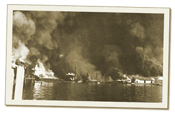

|
j
a v a s c r i p t |
December 10, 1941
Early morning brought bigger news: The Japanese landed at Aparri and Vigan in the north and northwest coasts of Luzon. It’s dawning on all that the Pacific Fleet won’t appear in time to assist us. Not after Pearl.

The Cavite naval base goes up in smoke.
1230: A flight of 54 Japanese planes, 27 in a perfect A-formation, bombed the Cavite Naval Base, leaving it in flames and killing or wounding 500. Other planes hit Nielson and Nichols again, starting the biggest fire yet and prompting the evacuation of the nearby Parañaque district. I watched two beautiful dogfights and saw one Japanese plane go down. Our air force was magnificent but vastly outnumbered. Estimates of Japanese losses: 2 to 9 planes. Drove my eldest brother Joe (a U.S. citizen since 1931) to volunteer at the military offices in Fort Santiago†, where the Walled City [Intramuros] meets the Pasig River. As I waited outside, Japanese planes started bombing the Bay and the piers. Everyone scattered for the shelters at the siren. I stayed under my Mercury for the duration with one eye on the lookout for Joe. Soon enough, a figure appeared in the patio. To my astonishment, MacArthur began pacing back and forth, unconcerned about bombs or shrapnel! The bombs interrupted Joe’s physical examination three times before the tests were finally cancelled. “Oh, what the hell,” said the doctor, “you're accepted, period.” Later, news of the sinking of the Prince of Wales and Repulse within 21 minutes of each other stunned us all. With the attacks on Guam and Wake, the dwindling likelihood of U.S. help added to the overall gloom. Many went to bed early to catch up on lost sleep. † Headquarters of the US Army Philippine Division |
|
|
|
|